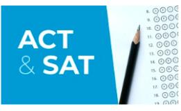

- 
-
ACT & SAT Prep Class ($30/hr)
The ACT & SAT Class is designed to prepare students to take the ACT & SAT by equipping them with skills and test-taking strategies to improve their score. The course will cover content and strategies for English, Math, Reading, Science, and the optional essay. Upon completion of the class, students should have an understanding of the ACT exam structure, general and section-specific test-taking strategies, and the ability to identify and handle difficult or tricky questions.
-
PSAT Prep Class ($30/hr)
The PSAT Prep Class is designed to prepare students to take the PSAT by equipping them with skills and test-taking strategies to improve their score. The course will cover content and strategies for Reading, Writing, Math. Upon completion of the course, students should have an understanding of the PSAT exam structure, general and section-specific test-taking strategies, and the ability to identify and handle difficult or tricky questions.
-
SAT 2-Week Bootcamp ($35/hr)
The SAT 2-Week Bootcamp Class is designed to be streamlined, strategy-focused prep to helps students hack the SAT without time-draining academic review. Designed to prepare students to take the SAT by equipping them with skills and test-taking strategies to improve their score. The course will cover content and strategies for Reading, Writing, Math, and the optional essay. Upon completion of the course students should have an understanding of the SAT exam structure, general and section-specific test-taking strategies, and the ability to identify and handle difficult or tricky questions.
-
SAT Prep Class ($30/hr)
The SAT Prep Class is designed to prepare students to take the SAT by equipping them with skills and test-taking strategies to improve their score. The course will cover content and strategies for Reading, Writing, Math, and the optional essay. Upon completion of the course, students should have an understanding of the SAT exam structure, general and section-specific test-taking strategies, and the ability to identify and handle difficult or tricky questions.
Not sure where to begin? We can help. Call us at 123-456-7890 to speak to your dedicated educational consultant.